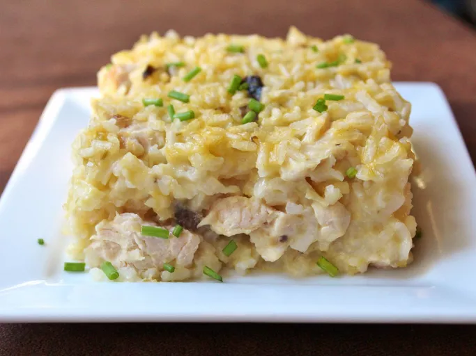

I grew up with this chicken and rice casserole recipe. My Grandmother got it from a lady from church at a pot luck a long time ago! She passed it down to my mom and it's always been a family favorite. Quick and easy for school nights, and the leftovers are just as good! You can use less butter on top of course, my Momma and Mamaw always put the full stick on top (gotta love Southern ladies and their butter!)
There's nothing like an old-fashioned recipe straight from your grandma's recipe box. Need proof? Mamaw's Chicken and Rice Casserole is comfort food incarnate. This simple, affordable, and absolutely irresistible meal will warm you up from the inside out. Learn how to make, store, freeze, and serve this easy chicken and rice casserole:
Gather all ingredients. Preheat the oven to 400 degrees F (200 degrees C). Grease sides and bottom of a casserole dish.
Stir chicken, water, rice, cream of chicken soup, cream of celery soup, and cream of mushroom soup together in the prepared casserole dish; season with salt and pepper.
Arrange butter evenly over the top of the chicken mixture.
Bake in the preheated oven until the rice is tender and the chicken is cooked through, 1 hour to 75 minutes.
Cool 10 to 15 minutes before serving. Enjoy!
Back